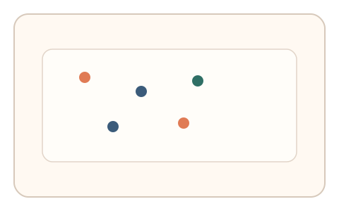
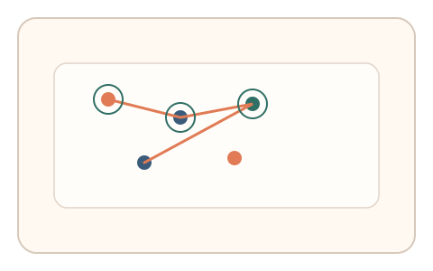
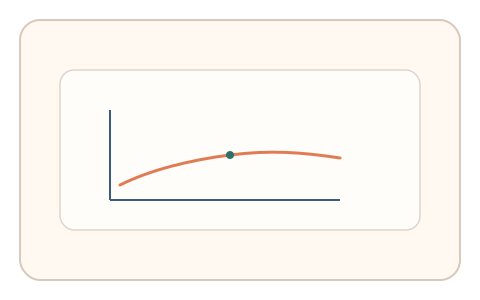

#50
视觉思考范式：扫描/错觉/全局-局部
已扩展
扫视‑停留节律点击
多目标瞬间出现后按第一眼顺序快速点击，利用扫视‑停留节律与序列结构验证真实性。
概念原文
画面上瞬间出现多个目标点，用户按“第一眼注意到的顺序”快速点击 3–5 个；系统记录点击序列、停留时长与跳跃节律。
以“注意力扫视节奏”而非识别正确性作为人类证据。
研究背景
人类视觉扫视通常呈现短停留与跃迁的节律结构，注意力优先序列具有稳定的时序特征。通过记录点击序列与停留时长，可形成比正确性更稳定的行为签名。
核心机制
- 瞬时呈现多个目标点并限定时间窗口。
- 用户按第一眼注意到的顺序点击 3-5 个点。
- 记录点击序列、停留时长与跳跃节律。
- 分析序列结构与节律一致性。
用户流程
- 步骤 1：用户看到多个目标点瞬间出现。
- 步骤 2：用户快速按顺序点击多个目标。
- 步骤 3：系统分析节律与序列并判定。
判定信号
点击序列与空间跳跃节律
人类扫视与点击呈现短停留+跃迁的节律结构。
停留时长分布
真实注意力选择存在稳定的停留时间区间。
判定逻辑
结合序列结构、停留分布与跳跃节律进行判定；过度规则或过度随机判异常。
对抗面
- 脚本随机点击模拟序列
- 重放真实用户的点击轨迹
防御与缓解
- 随机化目标位置与数量
- 引入轻微时间抖动与干扰点
- 叠加鼠标轨迹与微时序信号进行多信号验证
可达性与风险
提供更长时间窗口或键盘选择模式，避免对反应较慢用户造成负担。
- 过短时间窗导致误拒
- 屏幕尺寸差异影响跳跃距离
可视化状态

状态 1：目标瞬现
多个目标点短时出现。

状态 2：顺序点击
用户按第一眼顺序快速点击。

状态 3：节律判定
分析停留与跳跃节律。
参考资料
Saccade
说明扫视与停留的节律特征。
Visual attention
说明注意力优先序列与选择机制。